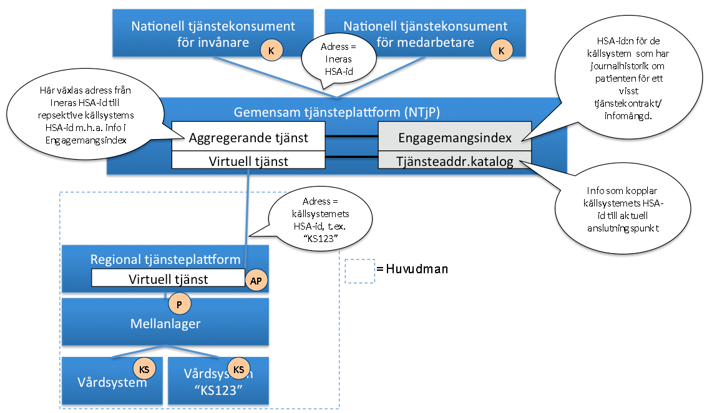
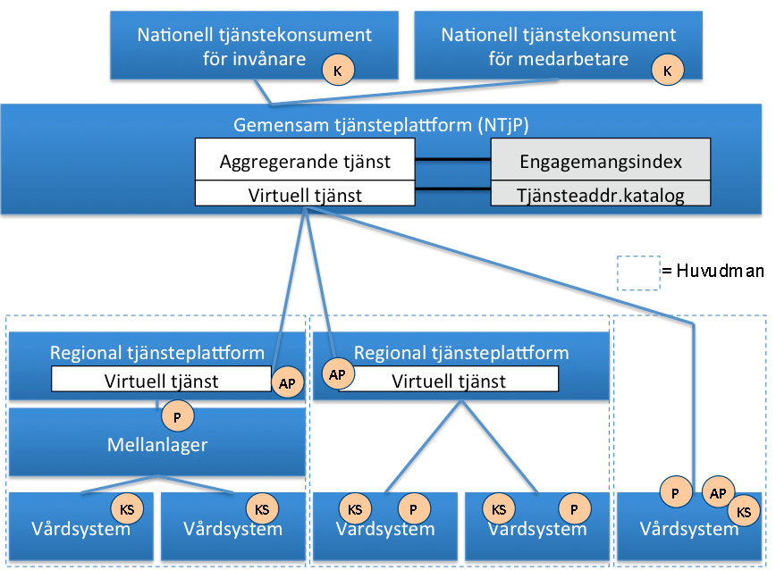
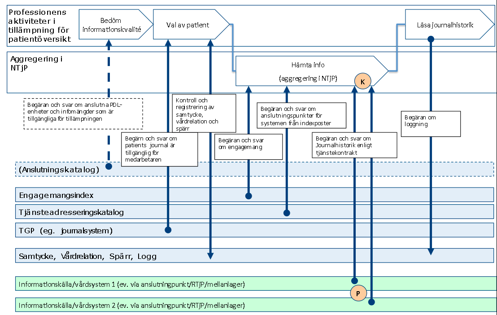
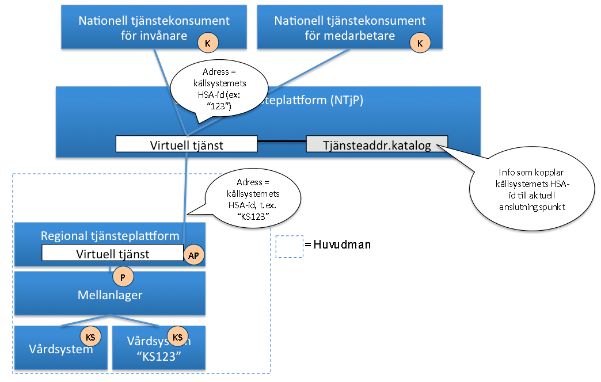
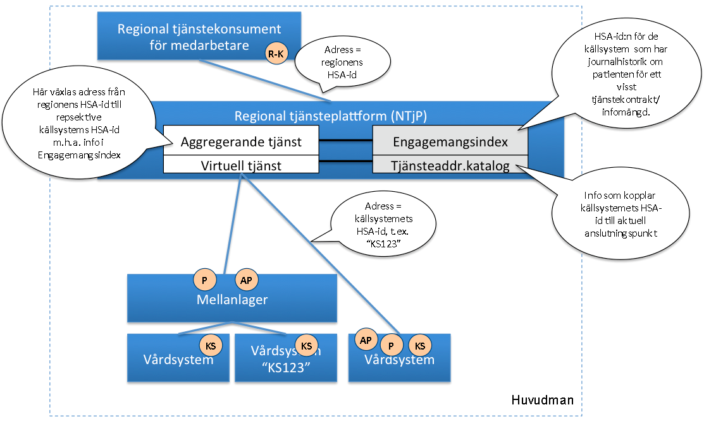

This fragment is not visible to the reader
This publication includes IP covered under the following statements.
| Type | Reference | Content |
|---|---|---|
| web | www.inera.se |
IG © 2024+
. Package inera.clinicalprocess-logistics-logistics#2.0.7 based on FHIR 4.0.1
. Generated 2026-10-08
Links: Table of Contents | QA Report |
| web | oskthu2.github.io |
TKB-version:
2.0.7 · IG-version:
2.0.7 · Källa:
Bitbucket-tagg 2.0.7
· Andra huvudversioner:
3.0.13
|
| web | oskthu2.github.io |
Äldre huvudversion.
Detta är TKB 2.0.7 (Bitbucket-tagg 2.0.7
). Den senaste huvudversionen, 3.0 (TKB 3.0.13), finns på clinicalprocess: logistics: logistics
.
|
|
img_001.png  |
|
img_002.png  |
|
img_003.png
|
|
img_004.png  |
|
img_005.png  |
|
img_006.png  |
|
img_007.png |
|
tree-filter.png
|